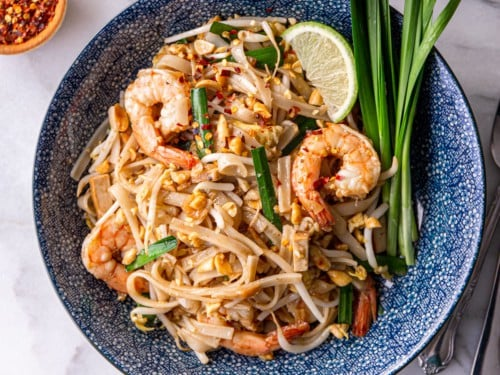

Pad Thai

Description
Pad thai, phat thai, or phad thai, is a stir-fried
rice noodle dish commonly served as a street food in Thailand as part of the country's cuisine.
It is typically made with rice noodles, shrimp, peanuts, a scrambled egg, and bean sprouts.
Ingredients
- 8 oz. rice noodles, broken in half
- 6 tbsp. peanut or vegetable oil, divided
- 1 lb. medium shrimp, peeled, deveined, tails removed
- 3 large eggs
- 3 tbsp. palm sugar
- 3 tbsp. Thai fish sauce
- 2 tbsp. tamarind puree
- 1 tbsp. fresh lime juice, plus lime wedges for serving
- 1/4 tsp. cayenne pepper
- 1 medium shallot, finely chopped (about 3 tbsp.)
- 3 cloves garlic, finely chopped
- 6 scallions, cut into 1" pieces
- 1 c. bean sprouts
- 1/4 c. coarsely chopped peanuts
- 2 tbsp. coarsely chopped fresh cilantro (optional)